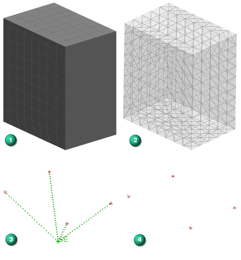

In the context of the system model, the mapped superelement is reduced to only the defined boundary nodes. These boundary nodes are displayed using the Unattached Marker Type specified in the Model Display dialog box. To help you visualize all components of the system, you can display the superelement representation as:
An approximation of the base FEM mesh topology. This approximation is transparent, lightweight, and non-selectable.
A generic superelement symbol.
|

|